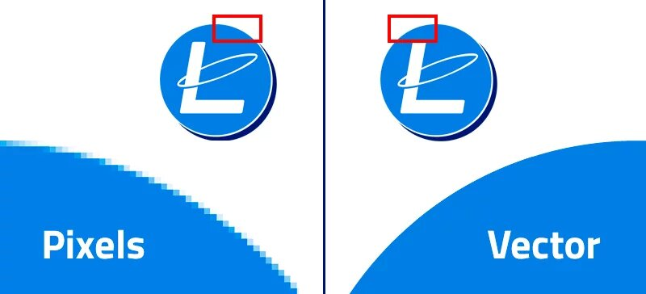

Je kan verschillende soorten afbeeldingen opslaan. Maar je wilt natuurlijk dat dat zo min mogelijk data kost. Plaatjes bestaan uit pixels, weten we nu. Hoe meer pixels per oppervlakte een afbeelding heeft, hoe scherper en mooier de afbeelding is. Afbeeldingen die bestaan uit pixels noem je bitmapafbeeldingen. Helaas hebben bitmapafbeeldingen nadelen. Een bitmapafbeelding kost bijvoorbeeld veel opslagruimte. Ook kan je de afbeelding niet echt inzoemen, want dan zijn de losse pixels zichtbaar en is de afbeelding niet scherp meer. Meer pixels is wel mooier, maar het kost ongelovenlik veel ruimte.
Een andere manier van afbeeldingen opslaan op een computer of harde schijf is met vectorafbeeldingen. Dat doe je niet door de pixels op te slaan, maar de vorm, kleur, grootte en de locatie als eigenschappen te noteren. Het voordeel van vectorafbeeldingen is dat je makkelijk de afbeelding kan wijzigen, bijvoorbeeld vergroten of verkleinen. De vorm wordt opnieuw getekend waardoor er geen onscherpte kan voorkomen, tegenstellend tot de bitmapafbeeldingen. Er is wel een nadeel aan vectorafbeeldingen, en dat is dat je alleen vormen kan vastleggen. Een digitale foto bestaat niet uit vormen maar uit verschillende kleurtinten. Dan kan je het dus niet als vector opslaan.
Geluid kan ook worden opgeslagen in computers. Maar hoe worden die trillingen in de lucht omgezet naar nullen en enen? Dat kan door te samplen. Samplen is het opnemen van geluid met een microfoon. Die mircofoon kan die trilling omzetten naar elektrische signalen en de computer kan dit elektrische signaal omzetten naar digitale waarden. Bij het samplen wordt om een bepaald aantal seconden door de computer gemeten wat het sterkte geluid is. De waarden worden binair opgeslagen. Als je het vervolgens wilt afspelen, worden die waarden omgezet naar een elektrisch signaal. Hoe meer samples, hoe nauwkeuriger. Dat noem je ook wel de sample rate: het aantal samples per seconde. In dit filmpje hoor je hoge en lagere sample rates.